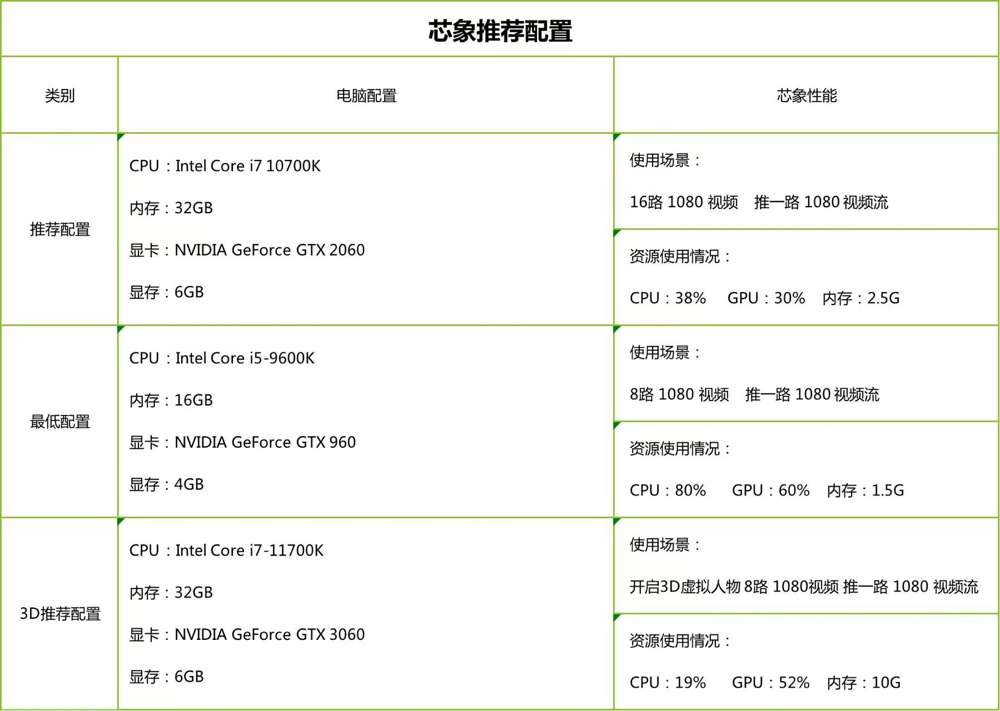
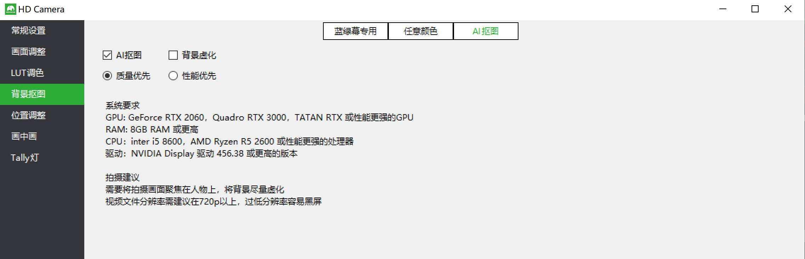
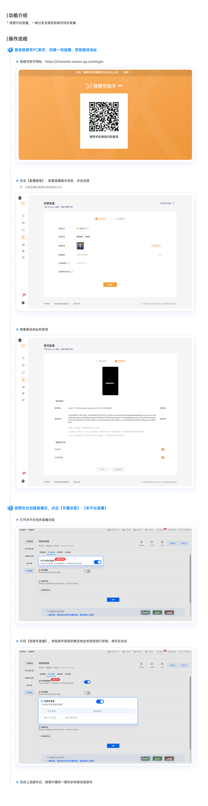

iframe播放器嵌入:
iframe播放器引用代码:
<iframe src="https://wx.vzan.com/live/m/vzliveplayer?type=live&vid=92565697&liveId=457238169">
</iframe>
iframe播放器属性配置:
liveId: 457238169, // 直播间id
type: 'live', // 视频源类型 live:直播， video:小视频
vid: 92565697, // 视频源id(话题id或小视频id)
芯象导播-专业版基本介绍教程回放：
芯象教程中心：
这个是一些简单的教程，更多的教程可以芯象帮助中心或者芯象视频号上有哈~
感谢您的支持和理解，芯象科技将与您一路同行，欢迎在群内交流直播技术问题[玫瑰][玫瑰]